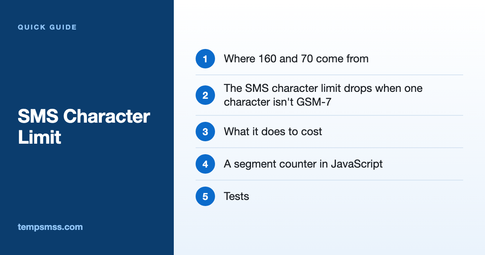

SMS Character Limit: GSM-7 vs UCS-2 and a Segment Counter in JavaScript
The SMS character limit is 160 characters when every character is in the GSM-7 alphabet, and 70 when even one isn't, because the whole message then goes out as UCS-2. Longer messages are split into parts of 153 (GSM-7) or 67 (UCS-2) characters, and every part is billed as a separate SMS. So one emoji or one curly apostrophe can turn a one-part verification message into two. Below is why, plus a small JavaScript part counter tested with Node.js 26.5.

Where 160 and 70 come from
A single SMS carries 140 bytes of text. GSM-7 packs each character into 7 bits, so 140 × 8 / 7 = 160 characters. UCS-2 uses 16 bits per character, so 140 / 2 = 70.
Longer messages are split into parts, each starting with a small header that tells the phone how to reassemble them. The header takes space from the text:
| Encoding | One message | Per part when split |
|---|---|---|
| GSM-7 | 160 characters | 153 characters |
| UCS-2 | 70 characters | 67 characters |
The SMS character limit drops when one character isn't GSM-7
GSM-7 covers basic Latin letters, digits, common punctuation and a few accented and Greek letters. Anything outside it switches the entire message to UCS-2. Common culprits:
- Emoji. Most count as two UCS-2 units; flags and combined emoji count as more.
- Smart punctuation. Curly quotes, the ellipsis character and long dashes, often added by word processors and editors.
- Many accented letters. é, ü, ñ, å and ö are in GSM-7; ê, á, í, ó and ł aren't.
- Non-Latin scripts such as Cyrillic, Arabic or Chinese.
- Invisible characters, like a non-breaking space pasted from a web page.
A few GSM-7 characters sit in an extension table and cost two slots each: € [ ] { } \ ~ ^ |. Some networks also support national language tables; the counter below assumes the default alphabet.
What it does to cost
Every part is charged as a message. This 82-character code message is GSM-7 and fits in one SMS:
Your Example code is 482913. It expires in 10 minutes. Don't share it with anyone.
Paste it from a document that curled the apostrophe and it becomes UCS-2, over the 70 limit, so it goes out as two parts. That doubles the cost of every code, on every retry, in every country.
A segment counter in JavaScript
// sms-segments.js
// GSM 03.38 default alphabet (without the escape code) and its extension table.
const GSM7_BASIC = new Set(
'@£$¥èéùìòÇ\nØø\rÅåΔ_ΦΓΛΩΠΨΣΘΞÆæßÉ !"#¤%&\'()*+,-./0123456789:;<=>?' +
'¡ABCDEFGHIJKLMNOPQRSTUVWXYZÄÖÑܧ¿abcdefghijklmnopqrstuvwxyzäöñüà'
);
const GSM7_EXTENDED = new Set('\f^{}\\[~]|€'); // each one costs 2 septets
function smsSegments(text) {
const chars = Array.from(text); // code points, so an emoji is one item
const gsm7 = chars.every((c) => GSM7_BASIC.has(c) || GSM7_EXTENDED.has(c));
// GSM-7 counts septets; UCS-2 counts UTF-16 code units (an emoji is 2).
const costs = chars.map((c) => (gsm7 ? (GSM7_EXTENDED.has(c) ? 2 : 1) : c.length));
const units = costs.reduce((sum, n) => sum + n, 0);
const single = gsm7 ? 160 : 70;
const perPart = gsm7 ? 153 : 67;
let segments = 1;
if (units > single) {
// Fill parts one character at a time, so an escape pair or an
// emoji is never cut in half between two parts.
let used = 0;
for (const n of costs) {
if (used + n > perPart) {
segments += 1;
used = 0;
}
used += n;
}
}
return { encoding: gsm7 ? 'GSM-7' : 'UCS-2', units, segments };
}
// Which characters pushed the message out of GSM-7?
function nonGsmChars(text) {
const found = Array.from(text).filter((c) => !GSM7_BASIC.has(c) && !GSM7_EXTENDED.has(c));
return [...new Set(found)];
}
module.exports = { smsSegments, nonGsmChars };
Array.from walks the string by code point, so an emoji is one character with a length of 2. The loop fills each part instead of dividing by 153 or 67, so a two-unit character that doesn't fit moves to the next part. Providers split slightly differently, so treat the result as an estimate.
Tests
// sms-segments.test.js
const test = require('node:test');
const assert = require('node:assert/strict');
const { smsSegments, nonGsmChars } = require('./sms-segments');
test('GSM-7: 160 in one message, then parts of 153', () => {
assert.equal(smsSegments('a'.repeat(160)).segments, 1);
assert.equal(smsSegments('a'.repeat(161)).segments, 2);
// 306 septets, but the two-septet € can't straddle two parts
assert.equal(smsSegments('a'.repeat(152) + '€' + 'a'.repeat(152)).segments, 3);
});
test('one curly apostrophe turns one message into two', () => {
const otp = "Your Example code is 482913. It expires in 10 minutes. Don't share it with anyone.";
const curly = otp.replace("'", '’');
assert.deepEqual(smsSegments(otp), { encoding: 'GSM-7', units: 82, segments: 1 });
assert.deepEqual(smsSegments(curly), { encoding: 'UCS-2', units: 82, segments: 2 });
assert.deepEqual(nonGsmChars(curly), ['’']);
});
test('UCS-2: 70 in one message, then parts of 67, emoji count as 2', () => {
assert.equal(smsSegments('ж'.repeat(70)).segments, 1);
assert.equal(smsSegments('ж'.repeat(71)).segments, 2);
assert.equal(smsSegments('Code 123456 👍').units, 14);
});
Run it with node --test (output trimmed to the results):
✔ GSM-7: 160 in one message, then parts of 153
✔ one curly apostrophe turns one message into two
✔ UCS-2: 70 in one message, then parts of 67, emoji count as 2
ℹ tests 3
ℹ pass 3
ℹ fail 0
Keeping code messages in one part
- Replace smart quotes before sending, and run
nonGsmChars()over every template in a unit test. - Leave emoji out of verification texts and put the code near the start.
- Check every translation: one accented letter can double the part count.
- Check whether your provider can swap look-alike characters automatically.
Only a real phone shows what actually arrives. For a quick manual check, the free public numbers on Temp SMS show incoming texts on a web page. Anyone can read those messages and the numbers are retired over time, so use them only for throwaway test accounts, never banking, a main email or two-factor authentication.
FAQ
What is the SMS character limit? 160 characters in GSM-7, or 70 if any character needs UCS-2. Split messages carry 153 or 67 characters per part.
Why is my short SMS being sent as two messages? Usually one character outside GSM-7, such as a curly apostrophe or an emoji, switched it to UCS-2, where a single message holds only 70.
How many characters does an emoji use in an SMS? Most count as two UCS-2 units, flags and combined emoji as more, and any emoji switches the message to UCS-2.